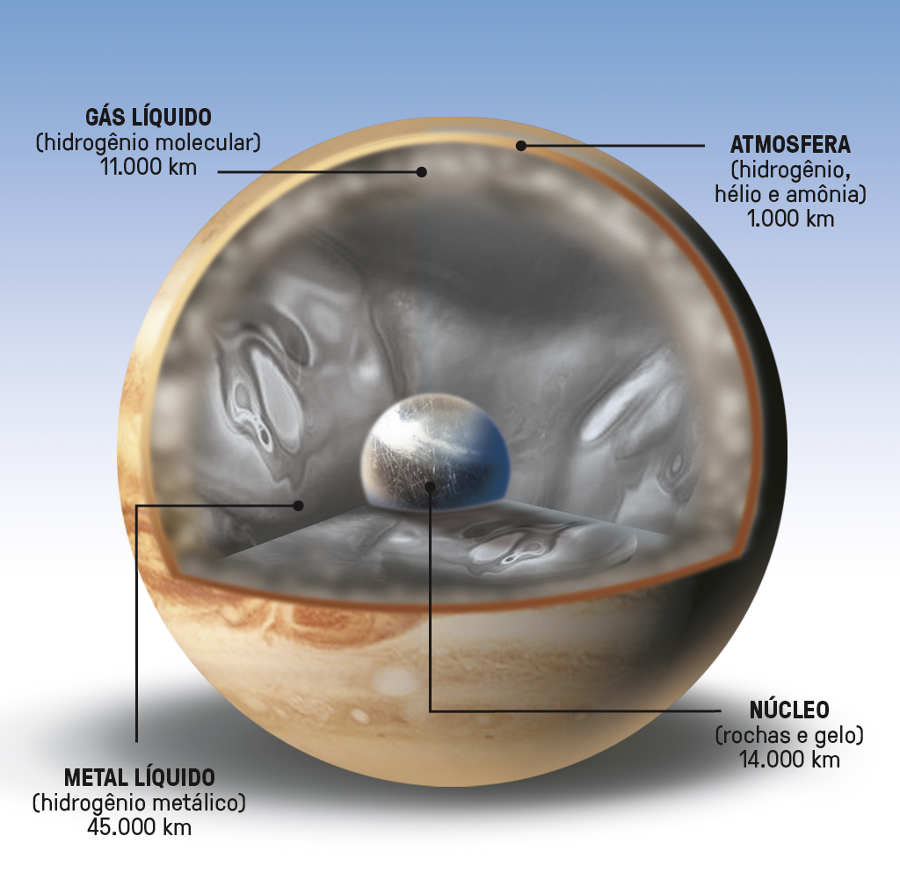
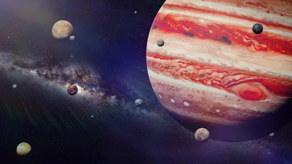

Júpiter
O Gigante Gasoso e Rei dos Planetas
Júpiter é uma verdadeira maravilha do nosso sistema solar. Imagine um planeta tão grande que caberiam mais de 1.300 Terras dentro dele. Este gigante gasoso é o maior e mais massivo de todos os planetas, uma verdadeira realeza cósmica. Sua atmosfera é um espetáculo à parte, com listras coloridas e turbilhões de nuvens, incluindo a famosa Grande Mancha Vermelha, uma tempestade que dura séculos e é maior do que nosso planeta inteiro.
História e Observação
Desde tempos antigos, Júpiter tem sido uma presença constante nos céus noturnos da Terra. É um dos objetos mais brilhantes que podemos ver no nosso céu, visível a olho nu. Os astrônomos babilônicos registraram suas observações de Júpiter já há milhares de anos, e ele era associado a várias divindades em diferentes culturas. Isso o tornou um dos pontos de referência celestiais mais reconhecíveis e importantes da Antiguidade.
A exploração de Júpiter começou com telescópios terrestres no século XVII, mas se intensificou com o avanço da exploração espacial. Missões espaciais como as Voyager e, mais recentemente, a Juno da NASA, forneceram informações cruciais sobre a atmosfera, a estrutura interna e as luas de Júpiter.

Composição Química
Júpiter é um gigante gasoso, o que significa que não possui uma superfície sólida definida. Ele é, essencialmente, uma gigantesca esfera de gás. Sua composição química é predominantemente constituída de hidrogênio e hélio, que são os elementos mais abundantes no universo.
O hidrogênio representa cerca de 75% de sua composição, enquanto o hélio compõe cerca de 24%. Os 1% restantes consistem em traços de outros gases, como metano, amônia, vapor de água, etano e outros compostos orgânicos. Essa composição química é semelhante à do Sol, tornando Júpiter uma espécie de "gêmeo" em termos de elementos primordiais.
A atmosfera que o planeta possui é responsável por uma notável faixa de nuvens coloridas, incluindo a Grande Mancha Vermelha, uma tempestade antiga e colossal que é maior do que a Terra.
Curiosidades
O Gigante Mais Velho: Júpiter é o planeta mais antigo do nosso sistema solar. Ele se formou logo após o Sol, o que significa que existe há mais de 4,5 bilhões de anos.
A Grande Mancha Vermelha: Essa icônica tempestade em Júpiter, conhecida como a Grande Mancha Vermelha, existe há pelo menos 350 anos e possivelmente muito mais. É uma tempestade que é maior do que a Terra e é um dos fenômenos mais duradouros do sistema solar.
Magnetosfera Poderosa: Júpiter tem uma magnetosfera extremamente poderosa, a maior do sistema solar. Isso cria intensos cinturões de radiação ao seu redor, tornando-o um ambiente inóspito para sondas espaciais e naves tripuladas.
Expansão e Contração: Júpiter passa por um processo de expansão e contração regular devido às interações gravitacionais com suas luas. Isso faz com que o planeta aumente e diminua de tamanho, embora de maneira muito sutil.
